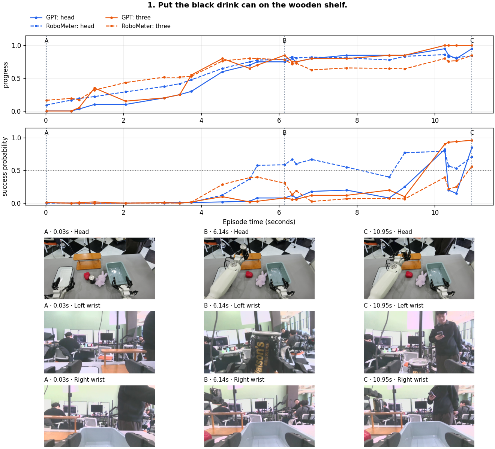
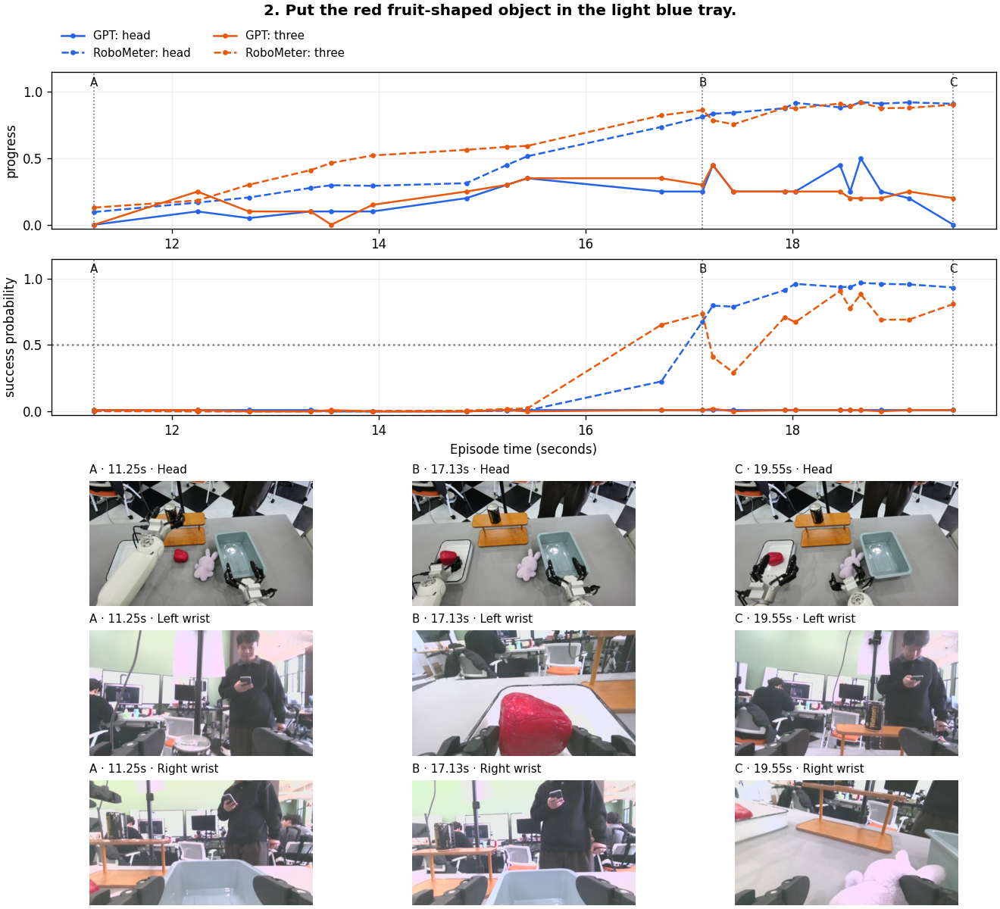
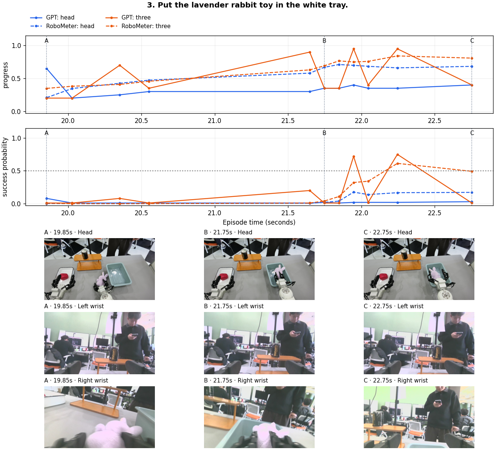

Run coverage: 914/914 camera/time-step judgments. GPT independently scored the same selected histories, without RoboMeter scores. GPT scores and probability estimates are not human ground truth or calibrated probabilities. Agreement does not establish accuracy. Three-camera images use horizontal tiles.
Complete: 108/108 judgments across 54 selected times. Blue: head only; orange: three cameras. Solid: GPT; dashed: RoboMeter. A/B/C match the image columns. Null GPT scores are gaps, not zero.

| Camera input | GPT final progress / success | RoboMeter at same time | GPT final evidence |
|---|---|---|---|
| head · 10.95s | 0.950 / 0.850 | 0.840 / 0.707 | The black can is upright on the wooden shelf’s top tier and remains in place across the final snapshots. The gripper appears open around it, though its proximity partly obscures the base and makes full release slightly uncertain. |
| three · 10.95s | 1.000 / 0.960 | 0.847 / 0.562 | The black drink can is upright on the wooden shelf’s top surface. The gripper has opened and lifted clear, and the can remains standing; the right wrist view shows placement most clearly. |
Source annotation review notes: Task boundary: confirm release and next target in the original head/wrist images.
| Time / camera input | Progress / success | Status and evidence |
|---|---|---|
| 0.03s / head | 0.000 / 0.010 | not_success: The black drink can is visible on the tabletop near the center, while the wooden shelf is at the upper left; the can is not on the shelf. |
| 0.03s / three | 0.000 / 0.010 | not_success: The black drink can is upright on the table beside the red object and purple toy, in front of the wooden shelf. The shelf is empty, and neither gripper is holding the can. |
| 0.66s / head | 0.000 / 0.001 | not_success: The black drink can remains upright on the tabletop in front of the wooden shelf, beside the purple plush toy. Neither gripper holds it, and the shelf is empty. |
| 0.66s / three | 0.000 / 0.000 | not_success: The black drink can remains upright on the tabletop beside the red object and purple plush, in front of the empty wooden shelf. Neither gripper is holding or contacting the can. |
| 0.86s / head | 0.030 / 0.000 | not_success: The black drink can remains upright on the tabletop in front of the empty wooden shelf. The left gripper has moved toward it but has not visibly contacted or grasped it. |
| 0.86s / three | 0.050 / 0.010 | not_success: The black can remains upright on the tabletop beside the red object and purple toy. The left gripper has moved toward it, but no grasp or lift is visible, and the wooden shelf remains empty. |
| 1.26s / head | 0.100 / 0.000 | not_success: The left gripper has approached the black drink can, but the can remains upright on the tabletop in front of the wooden shelf. No grasp, lift, or placement is visible. |
| 1.26s / three | 0.350 / 0.020 | not_success: The black drink can is visible near the lower part of the head-camera view, apparently being handled, while the wooden shelf remains empty. No stable placement on the shelf is visible. |
| 2.05s / head | 0.100 / 0.000 | not_success: The left gripper has approached the black can, but the can remains upright on the table. No grasp or lift is visible, and the wooden shelf is empty. |
| 2.05s / three | 0.150 / 0.000 | not_success: The left gripper has approached the black can, but the can remains upright on the tabletop beside the red object and purple toy. No secure grasp, lift, or placement on the wooden shelf is visible. |
| 3.05s / head | 0.200 / 0.010 | not_success: The left gripper has approached and surrounds the black drink can, which remains at tabletop level in front of the wooden shelf. No lift, transfer, or released placement on the shelf is visible; the grasp is partly occluded. |
| 3.05s / three | 0.200 / 0.010 | not_success: The left gripper has approached and surrounds the black can near its base, but a secure grasp or lift is not confirmed. The can remains on the tabletop in front of the wooden shelf; no placement or release on the shelf is visible. |
| 3.45s / head | 0.250 / 0.010 | not_success: The left gripper appears closed around the black can near its original tabletop position, possibly beginning to lift it. The wooden shelf remains empty; transport, release, and stable placement are not visible. |
| 3.45s / three | 0.250 / 0.000 | not_success: The left gripper is closed around the black drink can near its original tabletop position. The can has not been transported to the wooden shelf, which remains empty; no release or shelf placement is visible. |
| 3.75s / head | 0.300 / 0.010 | not_success: The left gripper holds the black can and appears to have lifted it slightly from the table. The can remains in front of the wooden shelf; no placement or release onto the shelf is visible. |
| 3.75s / three | 0.550 / 0.020 | not_success: The black drink can is visibly grasped upright by the gripper near the wooden shelf, but it remains held and is not visibly released or stably resting on the shelf. |
| 4.54s / head | 0.600 / 0.020 | not_success: The left gripper has lifted the black can and moved it toward the wooden shelf. The can remains held near the shelf; no release or stable placement is visible. |
| 4.54s / three | 0.800 / 0.100 | not_success: The black can is visibly grasped and positioned over/near the wooden shelf, but the gripper is still holding it; release and stable placement on the shelf are not visible. |
| 5.24s / head | 0.700 / 0.030 | not_success: The left gripper has lifted the black drink can and moved it above the wooden shelf. The can remains visibly held; release and stable placement on the shelf are not shown. |
| 5.24s / three | 0.650 / 0.020 | not_success: The left gripper has lifted the black drink can and moved it above the wooden shelf. The can remains visibly held between the fingers; release and stable placement on the shelf are not shown. |
| 5.44s / head | 0.750 / 0.080 | not_success: The left gripper has lifted the black can and brought it over the wooden shelf. It still surrounds the can; release and stable placement are not visible, and the can's base is partly occluded. |
| 5.44s / three | 0.700 / 0.030 | not_success: The black drink can has been lifted and moved above the wooden shelf, but remains enclosed in the left gripper. Release and stable placement on the shelf are not visible. |
| 6.14s / head | 0.750 / 0.080 | not_success: The black can is visibly grasped above the wooden shelf, but it has not been released or visibly placed stably on the shelf. |
| 6.14s / three | 0.850 / 0.080 | not_success: The black can is visibly grasped and positioned over the wooden shelf, but the gripper remains closed around it and no stable released placement is shown. |
| 6.34s / head | 0.800 / 0.120 | not_success: The robot has lifted the black can and moved it over the wooden shelf. At the last snapshot, the gripper still surrounds the can; its base is obscured, and release or stable placement is not visible. |
| 6.34s / three | 0.750 / 0.060 | not_success: The black drink can has been lifted and moved over the wooden shelf, but the left gripper still surrounds it. Its base is obscured, and release or stable placement on the shelf is not visible. |
| 6.44s / head | 0.750 / 0.080 | not_success: The robot has lifted the black drink can and moved it upright over the wooden shelf. At the last frame the gripper still surrounds the can; its base is obscured, and release or stable placement is not visible. |
| 6.44s / three | 0.750 / 0.060 | not_success: The robot has lifted the black drink can and moved it above the wooden shelf. At the last snapshot the gripper still holds the can; its base is partly occluded, and release or stable placement is not visible. |
| 6.84s / head | 0.800 / 0.180 | not_success: The black can has been lifted and moved upright to the wooden shelf's upper level. The left gripper still surrounds it, obscuring its base; release and stable unsupported placement are not visible. |
| 6.84s / three | 0.800 / 0.120 | not_success: The black drink can has been lifted and moved over the wooden shelf, close to its upper surface. The gripper still surrounds the can; release and stable unsupported placement are not visible. |
| 7.73s / head | 0.850 / 0.200 | not_success: The black can has been lifted and positioned upright at the wooden shelf's top surface. The gripper still surrounds the can, obscuring its base; release and stable unsupported placement are not visible. |
| 7.73s / three | 0.800 / 0.120 | not_success: The black drink can has been lifted and moved upright to the wooden shelf. At the last snapshot the gripper still surrounds the can; its base is partly occluded, and release and stable unsupported placement are not visible. |
| 8.83s / head | 0.850 / 0.080 | not_success: The black can is visibly being held by the left gripper above the wooden shelf, but the gripper has not released it, so stable placement on the shelf is not confirmed. |
| 8.83s / three | 0.850 / 0.200 | not_success: The black drink can has been lifted and positioned upright at the wooden shelf's upper surface. The left gripper still surrounds the can; release and stable unsupported placement are not visible. |
| 9.23s / head | 0.850 / 0.250 | not_success: The black can has been moved upright to the wooden shelf, but the gripper remains around it and obscures its base. Release and stable unsupported placement are not confirmed. |
| 9.23s / three | 0.850 / 0.100 | not_success: The black can is visibly held by the gripper over the wooden shelf, but the gripper has not released it, so stable placement is not confirmed. |
| 10.25s / head | 0.950 / 0.820 | success: The black can appears upright on the wooden shelf’s upper surface, with the gripper fingers opened around it. The nearby hand partially obscures the base, and stability after withdrawal is not shown. |
| 10.25s / three | 1.000 / 0.900 | success: The black drink can is upright on the wooden shelf's upper tier, and the gripper appears open and separating from it. The shelf supports the can, though no later snapshot confirms continued stability. |
| 10.35s / head | 0.850 / 0.200 | not_success: The black can is visibly grasped above the wooden shelf, but the gripper still surrounds it and no release or stable placement on the shelf is visible. |
| 10.35s / three | 1.000 / 0.930 | success: The black drink can is upright on the wooden shelf at the final step, with the gripper visibly opened around it. Placement appears complete, though the nearby gripper partly obscures contact and prolonged stability is not shown. |
| 10.55s / head | 0.800 / 0.150 | not_success: The black can is visibly being held by the gripper above the wooden shelf, but the gripper has not released it, so stable placement on the shelf is not confirmed. |
| 10.55s / three | 1.000 / 0.940 | success: The black drink can is upright on the wooden shelf in the final views. The gripper has opened and lifted away, indicating release; the can remains standing, though its base is partly obscured. |
| 10.95s / head | 0.950 / 0.850 | success: The black can is upright on the wooden shelf’s top tier and remains in place across the final snapshots. The gripper appears open around it, though its proximity partly obscures the base and makes full release slightly uncertain. |
| 10.95s / three | 1.000 / 0.960 | success: The black drink can is upright on the wooden shelf’s top surface. The gripper has opened and lifted clear, and the can remains standing; the right wrist view shows placement most clearly. |

| Camera input | GPT final progress / success | RoboMeter at same time | GPT final evidence |
|---|---|---|---|
| head · 19.55s | 0.000 / 0.010 | 0.911 / 0.934 | The red fruit-shaped object is visibly resting in the white tray on the left, while the light blue tray on the right is empty. The instructed destination has not been reached. |
| three · 19.55s | 0.200 / 0.010 | 0.905 / 0.809 | The red fruit-shaped object was released and rests in the white tray on the left. The intended light blue tray on the right remains visibly empty. |
Source annotation review notes: Task boundary: confirm release and next target in the original head/wrist images.; The red fruit is in the white tray, contrary to the configured fruit-to-blue rule. Corrective transfer remains unfinished.
| Time / camera input | Progress / success | Status and evidence |
|---|---|---|
| 11.25s / head | 0.000 / 0.010 | not_success: The red fruit-shaped object is on the tabletop to the left of the light blue tray. The tray is visibly empty; no grasp or placement of the red object is shown. |
| 11.25s / three | 0.000 / 0.010 | not_success: The red fruit-shaped object remains on the tabletop to the left of the light blue tray. The tray is visibly empty, and no grasp or placement of the red object is shown. |
| 12.25s / head | 0.100 / 0.010 | not_success: The red fruit-shaped object is still visibly on the tabletop beside the pink toy, while the light blue tray appears empty. A gripper is nearby but no grasp or placement is visible. |
| 12.25s / three | 0.250 / 0.010 | not_success: The red fruit-shaped object is still visibly outside the light blue tray, with the gripper nearby; no grasp, release, or stable placement in the tray is visible. |
| 12.75s / head | 0.050 / 0.010 | not_success: The red fruit-shaped object remains on the tabletop outside the light blue tray. The left gripper is nearby but has not visibly grasped it; the tray is empty. |
| 12.75s / three | 0.100 / 0.000 | not_success: The left gripper is approaching the red fruit-shaped object, which remains on the tabletop outside the light blue tray. No grasp, transfer, or placement is visible; the tray is empty. |
| 13.34s / head | 0.100 / 0.010 | not_success: The left gripper has approached the red fruit-shaped object, but it remains on the tabletop outside the light blue tray. No grasp, lift, or placement is visible; the tray is empty. |
| 13.34s / three | 0.100 / 0.000 | not_success: The left gripper is approaching the red fruit-shaped object, which remains on the tabletop outside the light blue tray. No grasp, lift, or placement is visible; the tray is empty. |
| 13.54s / head | 0.100 / 0.000 | not_success: The left gripper has approached the red fruit-shaped object, but it remains on the tabletop outside the light blue tray. The tray is empty; no grasp, transfer, or placement is visible. |
| 13.54s / three | 0.000 / 0.010 | not_success: At the last time step, the red fruit-shaped object is still visibly on the tabletop beside the empty light blue tray; no stable placement inside the tray is shown. |
| 13.94s / head | 0.100 / 0.000 | not_success: The left gripper has approached the red fruit-shaped object, but it remains on the tabletop outside the light blue tray. No grasp, lift, or placement is visible; the tray is empty. |
| 13.94s / three | 0.150 / 0.000 | not_success: The left gripper has approached the red fruit-shaped object, which remains on the tabletop outside the light blue tray. No secure grasp or lift is visible, and the tray is empty. |
| 14.85s / head | 0.200 / 0.000 | not_success: The left gripper has moved around the red fruit-shaped object, but no lift is clearly visible. The object remains outside the light blue tray, which is empty; no placement or release has occurred. |
| 14.85s / three | 0.250 / 0.000 | not_success: The left gripper has closed around the red fruit-shaped object, but lifting is not clearly established. The object remains outside the light blue tray, which is empty; no placement or release is visible. |
| 15.24s / head | 0.300 / 0.010 | not_success: The left gripper appears to hold and slightly lift the red fruit-shaped object, still left of the light blue tray. The tray is empty; no transfer or release into it is visible. |
| 15.24s / three | 0.300 / 0.010 | not_success: The left gripper appears to have grasped and begun lifting the red fruit-shaped object, but it remains outside the light blue tray. The tray is empty; no release or placement is visible. |
| 15.44s / head | 0.350 / 0.010 | not_success: The left gripper has grasped and lifted the red fruit-shaped object, but it remains outside and to the left of the light blue tray. The tray is empty; no release or placement is visible. |
| 15.44s / three | 0.350 / 0.000 | not_success: The left gripper has grasped and lifted the red fruit-shaped object, but it remains to the left of the light blue tray. The tray is visibly empty; no release or placement has occurred. |
| 16.73s / head | 0.250 / 0.010 | not_success: The red fruit-shaped object is visibly grasped above the white tray on the left, not released or placed in the light blue tray on the right. |
| 16.73s / three | 0.350 / 0.010 | not_success: The left gripper holds the red fruit-shaped object above the white tray, away from the light blue tray. The light blue tray remains empty; no release or stable placement there is visible. |
| 17.13s / head | 0.250 / 0.010 | not_success: The left gripper has moved the red fruit-shaped object over the white tray on the left, where it still appears held. The requested light blue tray on the right remains empty; no release or placement there is visible. |
| 17.13s / three | 0.300 / 0.010 | not_success: The red fruit-shaped object is held in the left gripper over the white tray on the left. The light blue tray on the right remains empty; no release or placement in the correct tray is visible. |
| 17.23s / head | 0.450 / 0.010 | not_success: At the last time step, the red fruit-shaped object is still held by the gripper over the white tray on the left, not placed in the light blue tray on the right. |
| 17.23s / three | 0.450 / 0.020 | not_success: The red fruit-shaped object is visibly held by the gripper over/near the white tray on the left, while the light blue tray remains to the right and appears empty. It has not been released or stably placed in the blue tray. |
| 17.43s / head | 0.250 / 0.010 | not_success: The robot grasped the red fruit-shaped object and moved it over the white tray on the left. At the last step it remains beside the gripper there; release is unclear. The intended light blue tray on the right is empty. |
| 17.43s / three | 0.250 / 0.001 | not_success: The robot moved the red fruit-shaped object to the white tray on the left, where the gripper appears to be opening. The light blue tray on the right remains empty; release and stable placement are not fully clear. |
| 17.93s / head | 0.250 / 0.010 | not_success: The robot moved the red fruit-shaped object into the white tray on the left and appears to be releasing it. The requested light blue tray on the right remains empty; the gripper partly obscures the red object. |
| 17.93s / three | 0.250 / 0.010 | not_success: The robot moved the red fruit-shaped object into the white tray on the left and appears to have opened its gripper above it. The instructed light blue tray on the right remains empty; the gripper partly obscures the red object's placement. |
| 18.03s / head | 0.250 / 0.010 | not_success: The robot picked up the red object and appears to have released it in the white tray on the left. The instructed light blue tray on the right remains empty; the withdrawing gripper partially obscures the red object. |
| 18.03s / three | 0.250 / 0.010 | not_success: The robot picked up the red object and appears to have released it into the white tray on the left. At the last snapshot, the light blue tray on the right remains empty; the gripper partially obscures the red object in the wrong tray. |
| 18.46s / head | 0.450 / 0.010 | not_success: The red fruit-shaped object is visibly in the white tray on the left, while the light blue tray on the right is empty. It has not been placed in the instructed destination. |
| 18.46s / three | 0.250 / 0.010 | not_success: The red fruit-shaped object is visibly in/on the white tray at the left, while the light blue tray remains empty. The object is not placed in the instructed destination. |
| 18.56s / head | 0.250 / 0.010 | not_success: The red fruit-shaped object has been released into the white tray on the left. The requested light blue tray on the right remains empty; the gripper has withdrawn from the fruit. |
| 18.56s / three | 0.200 / 0.010 | not_success: The red fruit-shaped object has been released into the white tray on the left, where it remains at the last snapshot. The instructed light blue tray on the right is visibly empty. |
| 18.66s / head | 0.500 / 0.010 | not_success: The red fruit-shaped object is visibly placed in the white tray on the left, while the light blue tray on the right remains empty; the target placement is therefore not completed. |
| 18.66s / three | 0.200 / 0.010 | not_success: The red fruit-shaped object has been released into the white tray on the left. The intended light blue tray on the right remains empty, so the object was placed in the wrong destination. |
| 18.86s / head | 0.250 / 0.010 | not_success: The red fruit-shaped object was picked up and released into the white tray on the left, where it remains at the last step. The instructed light blue tray on the right is visibly empty. |
| 18.86s / three | 0.200 / 0.001 | not_success: The red fruit-shaped object has been released into the white tray on the left, where it remains at the last step. The intended light blue tray on the right is visibly empty; the grippers are away from the fruit. |
| 19.13s / head | 0.200 / 0.010 | not_success: The red fruit-shaped object has been released into the white tray on the left. The intended light blue tray on the right remains empty; the object is clearly visible in the wrong destination. |
| 19.13s / three | 0.250 / 0.010 | not_success: The red fruit-shaped object has been released and rests in the white tray on the left. The requested light blue tray on the right remains empty. |
| 19.55s / head | 0.000 / 0.010 | not_success: The red fruit-shaped object is visibly resting in the white tray on the left, while the light blue tray on the right is empty. The instructed destination has not been reached. |
| 19.55s / three | 0.200 / 0.010 | not_success: The red fruit-shaped object was released and rests in the white tray on the left. The intended light blue tray on the right remains visibly empty. |

| Camera input | GPT final progress / success | RoboMeter at same time | GPT final evidence |
|---|---|---|---|
| head · 22.75s | 0.400 / 0.030 | 0.683 / 0.172 | The lavender rabbit appears released and resting in the blue-gray bin on the right. The white tray on the left contains a red object and no rabbit, so the visible placement is in the wrong destination. |
| three · 22.75s | 0.400 / 0.010 | 0.809 / 0.492 | The lavender rabbit appears released and resting in the pale blue bin on the right. The requested white tray is on the left, contains a red object, and has no rabbit. |
Source annotation review notes: Task boundary: confirm release and next target in the original head/wrist images.; The red fruit is in the white tray, contrary to the configured fruit-to-blue rule. Corrective transfer remains unfinished.; The rabbit is in the light blue tray, contrary to the configured toys-to-white rule. Move it to the white tray.
| Time / camera input | Progress / success | Status and evidence |
|---|---|---|
| 19.85s / head | 0.650 / 0.080 | not_success: The lavender rabbit is visibly grasped near the white tray, but it remains outside/at the tray's edge and appears not yet released or stably placed inside. |
| 19.85s / three | 0.200 / 0.010 | not_success: The lavender rabbit is between the right gripper's fingers beside the pale blue bin, outside the white tray on the left. A secure grasp is unclear; no release or stable placement in the white tray is visible. |
| 20.03s / head | 0.200 / 0.010 | not_success: The gripper is around the lavender rabbit beside the blue-gray bin. The rabbit remains outside the white tray on the left; no release or stable placement in that tray is visible. |
| 20.03s / three | 0.200 / 0.010 | not_success: The lavender rabbit is between the right gripper's fingers beside the pale blue bin, still outside the white tray on the left. No release or stable placement in the white tray is visible. |
| 20.35s / head | 0.250 / 0.010 | not_success: The lavender rabbit is between the right gripper's fingers near the tabletop, outside the white tray on the left. A secure grasp is uncertain; no placement or release in the tray is visible. |
| 20.35s / three | 0.700 / 0.080 | not_success: The lavender rabbit is visibly held in the gripper near the white tray, but it has not been released and is not visibly stably placed inside the tray. |
| 20.55s / head | 0.300 / 0.010 | not_success: The lavender rabbit appears grasped and lifted by the right gripper, but remains outside the white tray on the left. No release or placement in the tray is visible. |
| 20.55s / three | 0.350 / 0.010 | not_success: The right gripper appears to hold and lift the lavender rabbit beside the blue-green bin. The rabbit remains outside the white tray on the left; no release or stable placement in the tray is visible. |
| 21.65s / head | 0.300 / 0.010 | not_success: The lavender rabbit is held by the right gripper over the blue-gray bin. The white tray is on the left with a red object inside. No release or stable placement in the white tray is visible. |
| 21.65s / three | 0.900 / 0.200 | not_success: The lavender rabbit is visibly positioned over/inside the white tray, but the gripper is still holding it, so release and stable placement are not confirmed. |
| 21.75s / head | 0.350 / 0.020 | not_success: The lavender rabbit is held by the right gripper over the blue-gray bin, rather than the white tray on the left. No release or stable placement in the white tray is visible. |
| 21.75s / three | 0.350 / 0.010 | not_success: The lavender rabbit is grasped and lifted, but remains in the right gripper over the pale green bin. The white tray is on the left with a red object inside. No release or stable placement in the white tray is visible. |
| 21.85s / head | 0.350 / 0.010 | not_success: The lavender rabbit has been lifted and moved into the pale blue tray on the right, rather than the white tray on the left. The gripper still surrounds the rabbit; release and stable placement are not confirmed. |
| 21.85s / three | 0.350 / 0.010 | not_success: The lavender rabbit has been lifted and moved into the blue-green bin on the right, rather than the white tray on the left. The gripper still surrounds the toy; release and stable placement are not confirmed. |
| 21.95s / head | 0.400 / 0.020 | not_success: The lavender rabbit has been moved into the blue-gray tray on the right, while the white tray on the left still contains a red object. The gripper partly obscures the rabbit, so release is unclear; placement in the requested white tray has not occurred. |
| 21.95s / three | 0.950 / 0.720 | success: The lavender rabbit is visibly inside the white tray at the final time step. The gripper still partially occludes the lower body, so release and fully stable placement are not completely confirmed. |
| 22.05s / head | 0.350 / 0.020 | not_success: The robot moved the lavender rabbit into the blue-gray tray on the right, rather than the white tray on the left containing a red object. The gripper still surrounds the rabbit, so release is unclear. |
| 22.05s / three | 0.400 / 0.020 | not_success: The robot moved the lavender rabbit into the blue-gray bin on the right, rather than the white tray on the left. The gripper remains beside the toy, so release and stable placement are not fully confirmed. |
| 22.25s / head | 0.350 / 0.020 | not_success: The lavender rabbit appears released inside the blue-green bin on the right. The white tray on the left, containing a red object, remains without the rabbit; the robot used the wrong destination. |
| 22.25s / three | 0.950 / 0.750 | success: The lavender rabbit is visibly inside the white tray in the final frames, with its body supported by the tray. The gripper remains close around it, so release and fully stable placement are slightly occluded/uncertain. |
| 22.75s / head | 0.400 / 0.030 | not_success: The lavender rabbit appears released and resting in the blue-gray bin on the right. The white tray on the left contains a red object and no rabbit, so the visible placement is in the wrong destination. |
| 22.75s / three | 0.400 / 0.010 | not_success: The lavender rabbit appears released and resting in the pale blue bin on the right. The requested white tray is on the left, contains a red object, and has no rabbit. |